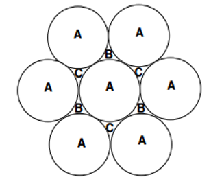

04-Crystallography
![]()
Summary
Contents
- Introduction
- Unit cells
- Positions
- Planes
- Packing
- Density
Introduction
- What are crystals?
- Why are we interested?
- Where do we get information?
- Layers & Stacking
- Unit Cells
- Allowed shapes
- Unit cell types
- Bravais Lattices
- BCC / FCC / HCP Crystals
- Positions and Planes in Crystals
- Examples of Different Crystal Types
What is a Crystal?
- Arrangement of atoms with repeated pattern in three dimensions.
- Array of points in the crystal look identical (same surrounding atoms, same orientation)
- Examples:
- gems (diamond, ruby)
- ceramics (silicates, alumina)
- metals (iron, coppe)
- even polymers.
- The opposite of a crystal is an amorphous or glassy solid. On an atomic scale these looks like frozen liquids.
- Can be tough to spot from external appearance
- e.g. a smooth shaped piece of glass is NOT a crystal;
- e.g. A rough irregularly shaped particle may consist of crystalline material.
Metals have Crystals
- Image below shows crystal grains in copper
- Polish and etch to reveal grain boundaries
Why do we care?
Information on Crystals
- Cambridge Structural Database (CSD):
- Information on >1 million crystals (1046700, March 2020)
- Nomenclature (how to name them)
- Freely available
- http://www.ccdc.cam.ac.uk/
Unit Cells
- Fundamental building blocks of crystals
- Arrangement of blocks must fill all space
- Seven different shapes of unit cell allowed namely;
- cubic
- tetragonal
- rhombohedral
- hexagonal
- orthorhombic
- monoclinic
- triclinic
Parameters for Unit Cells
- cubic: \(a\;=\;b\;=\;c\;\) and \(\;\alpha\;=\;\beta\;=\;\gamma\;=\;90^{\circ}\)
- tetragonal: \(a\;=\;b\;\neq\;c\;\)and \(\;\alpha\;=\;\beta\;=\;\gamma\;=\;90^{\circ}\)
- orthorhombic: \(a\;\neq\;b\;\neq\;c\;\) and \(\;\alpha\;=\;\beta\;=\;\gamma\;=\;90^{\circ}\)
- rhombohedral: \(a\;=\;b\;=\;c\;\) and \(\;\alpha\;=\;\beta\;=\;\gamma\;\neq\;90^{\circ}\)
- hexagonal: \(a\;=\;b\;=\;c\) and \(\alpha\;=\;\beta\;=\;90^{\circ}, \gamma\;=\;120^{\circ}\)
- monoclinic; \(a\;\neq\;b\;\neq\;c\;\) and \(\;\alpha\;=\;\beta\;=\;90^{\circ}\;\neq\;\gamma\)
- triclinic: \(a\;\neq\;b\neq\;c\;\) and \(\;\alpha\;\neq\;\beta\;\neq\;\gamma\;\neq\;90^{\circ}\)
Symmetries within Unit Cells
- As well as the symetries of their shapes, unit cells can have symmetries due to their internal structures
- Gives four types of unit cell
- simple (P)
- face centered (F)
- body centered (I)
- base centered (C)
Bravais Lattices
- Not all of the seven cell shapes can have all four types of internal symmetry
- For instance, the face centered tetragonal structure can be reduced to the body centered tetragonal structure
- There are fourteen distinct possibilities called the Fourteen Bravais lattices
- The fourteen lattices contain all the necessary translational symmetries to describe every possible crystal structure in nature
Metallic Crystal Structures
- Because of the nature of the metallic bond the principle requirement is for a high density
- Three arrangements satisfy this criterion
- body centered cubic (BCC)
- face centered cubic (FCC)
- hexagonal close packed (HCP)
Body Centred Cubic, Hexagonal Close Packed, and Face Centred Cubic
Layers and Stacking
- We’ll talk about metals here
- not so fussy about direction of bonds
- behave like hard spheres
- Lay spheres out on a table so they are packed as close as possible in one layer
- Two possibilities for next layer

- There are two ways to stack layers
- ABABABABA
- Creates form called Hexagonal Close Packed (HCP)
- ABCABCABC
- Creates form called Face Centred Cubic(FCC)
Positions, Directions, and Planes
- Position
- specifies a point within a unit cell
- expressed as fractions of lattice vectors.
- notation is ( 1/4, 0, -21/2 )
- Direction
- specifies the direction of a line
- expressed as a set of integers
- notation is [210] where 1 means -1.
- Planes
- specifies surfaces within the crystal
- expressed as a set of integers known as the Miller indices
- notation is (210).
Hints for Positions
- by convention, take the position (0,0,0) to be in the bottom left hand corner at the back
- remember which axes point in which directions.
- positions can be fractions; 21/2 , -3/4 , 8/3 , etc
- remember the notation; (x,y,z)
- positions with negative indices or indices >1 will be outside the unit cell
Hints for Planes
- sets of parallel planes all have the same Miller indices
- choose one of the planes that does not pass through the point (0,0,0)
- see where the plane cuts the x, y, and z axes (the intercepts, could be infinity)
- get the reciprocals of these intercepts
- clear fractions
References

Physics - Quantum